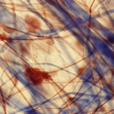
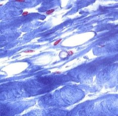
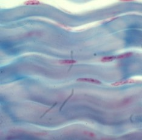

C. Bepaal het subtype bindweefsel s.s.:
Om tenslotte het type bindweefsel s.s. te bepalen moeten we nog kijken naar de verhouding tussen het aantal cellen en het aantal bindweefselvezels, en naar de rangschikking van de vezels.
Op basis daarvan kunnen we 3 types onderscheiden: losmazig bindweefsel, dicht regelmatig bindweefsel en dicht onregelmatig bindweefsel.
a. Losmazig bindweefsel
Losmazig bindweefsel bestaat uit extracellulaire matrix met een los geweven netwerk van collageenvezels (waaronder ook reticulinevezels) en elastinevezels, waardoor het in lichtmicroscopische preparaten lijkt alsof er veel ‘gaten’ of ‘mazen’ zijn in dit bindweefsel s.s. type. Het bevat veel cellen, waaronder veel vrije cellen. De grondsubstantie van de extracellulaire matrix is zacht waardoor de cellen relatief vrij kunnen bewegen. Losmazig bindweefsel vinden we bijvoorbeeld terug in het buikvlies of de onderhuid.
b. Dicht bindweefsel
Dicht bindweefsel bevat veel vezels, veelal collageen, en relatief weinig grondsubstantie, bindweefselcellen en vrije cellen Hierdoor is dit type bindweefsel trekvast en minder vervormbaar.
Afhankelijk van hoe de bindweefselvezels zijn georiënteerd, kunnen we dicht bindweefsel onderverdelen in regelmatig (geordend) dicht bindweefsel en onregelmatig (ongeordend) dicht bindweefsel.
Een typisch voorbeeld van regelmatig dicht bindweefsel is de pees. Aangezien deze structuren moeten weerstaan aan heel sterke trekkrachten tussen de spieren en het bot zullen hun stevige collageenvezels (type I) allemaal in dezelfde richting, parallel aan elkaar in bundels georiënteerd zijn zodat de weerstand in deze richting optimaal is. Tussen de vezels is er weinig ruimte waar vooral de kernen van fibroblasten en fibrocyten terug te vinden zijn.
Onregelmatig dicht bindweefsel vinden we terug op plaatsen waar trekkrachten in verschillende richtingen op het bindweefsel inwerken. Denk bijvoorbeeld maar aan de huid of aan bindweefselkapsels rondom organen. De vezels liggen hier in bundels kriskras georiënteerd. In vergelijking met het losmazig bindweefsel komen hier minder cellen voor, maar toch meer types dan bij het regelmatig dicht bindweefsel.
Om tenslotte het type bindweefsel s.s. te bepalen moeten we nog kijken naar de verhouding tussen het aantal cellen en het aantal bindweefselvezels, en naar de rangschikking van de vezels.
Op basis daarvan kunnen we 3 types onderscheiden: losmazig bindweefsel, dicht regelmatig bindweefsel en dicht onregelmatig bindweefsel.
a. Losmazig bindweefsel
Losmazig bindweefsel bestaat uit extracellulaire matrix met een los geweven netwerk van collageenvezels (waaronder ook reticulinevezels) en elastinevezels, waardoor het in lichtmicroscopische preparaten lijkt alsof er veel ‘gaten’ of ‘mazen’ zijn in dit bindweefsel s.s. type. Het bevat veel cellen, waaronder veel vrije cellen. De grondsubstantie van de extracellulaire matrix is zacht waardoor de cellen relatief vrij kunnen bewegen. Losmazig bindweefsel vinden we bijvoorbeeld terug in het buikvlies of de onderhuid.
b. Dicht bindweefsel
Dicht bindweefsel bevat veel vezels, veelal collageen, en relatief weinig grondsubstantie, bindweefselcellen en vrije cellen Hierdoor is dit type bindweefsel trekvast en minder vervormbaar.
Afhankelijk van hoe de bindweefselvezels zijn georiënteerd, kunnen we dicht bindweefsel onderverdelen in regelmatig (geordend) dicht bindweefsel en onregelmatig (ongeordend) dicht bindweefsel.
Een typisch voorbeeld van regelmatig dicht bindweefsel is de pees. Aangezien deze structuren moeten weerstaan aan heel sterke trekkrachten tussen de spieren en het bot zullen hun stevige collageenvezels (type I) allemaal in dezelfde richting, parallel aan elkaar in bundels georiënteerd zijn zodat de weerstand in deze richting optimaal is. Tussen de vezels is er weinig ruimte waar vooral de kernen van fibroblasten en fibrocyten terug te vinden zijn.
Onregelmatig dicht bindweefsel vinden we terug op plaatsen waar trekkrachten in verschillende richtingen op het bindweefsel inwerken. Denk bijvoorbeeld maar aan de huid of aan bindweefselkapsels rondom organen. De vezels liggen hier in bundels kriskras georiënteerd. In vergelijking met het losmazig bindweefsel komen hier minder cellen voor, maar toch meer types dan bij het regelmatig dicht bindweefsel.

Losmazig bindweefsel
bijv. buikvlies

Dicht onregelmatig bindweefsel
bijv. dermis

Dicht regelmatig bindweefsel
bijv. pees
Vordering zelfstudie bindweefsel s.s.: